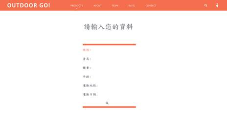
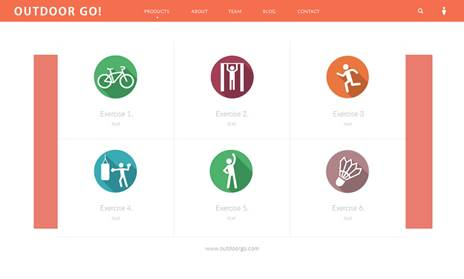
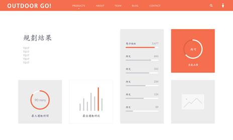

2018資料創新應用競賽
產品或服務構想書
|
參賽編號 |
OD-66790079 |
||||||||||||||||||||||||||||||||||
|
產品或服務名稱 |
Outdoor
Go! |
||||||||||||||||||||||||||||||||||
|
市場(使用)族群 |
戶外運動族群 |
||||||||||||||||||||||||||||||||||
|
產品或服務簡介 |
隨著保健、養生觀念的普及，許多人了解到健康的重要性，因此運動成為了現代人生活中重要的一部分，然而也因為科技、工業的進步，地球的環境不再像過去如此的單純，空氣中充斥著懸浮微粒、有害物質、在人們從事運動追求健康的同時，卻也吸入了大量的有害物質。 因此我們分析了交通部中央氣象局所提供的氣象資訊和行政院環保署的細懸浮微粒資料、結合代謝當量（MET），產生一套評估的準則，依照戶外運動者所從事的運動，規劃出合適的運動時段、不超量吸入有害物質之運動時間，以解決運動健康與空氣汙染所造成的衝突。 |
||||||||||||||||||||||||||||||||||
|
資料來源 |
資料集提供機關名稱 |
資料集名稱 |
資料集連結 |
||||||||||||||||||||||||||||||||
|
交通部 中央氣象局 |
自動氣象站-氣象觀測資料 |
||||||||||||||||||||||||||||||||||
|
酸雨pH值-每日酸雨pH值 |
|||||||||||||||||||||||||||||||||||
|
紫外線指數-每日紫外線指數最大值 |
|||||||||||||||||||||||||||||||||||
|
臭氧總量觀測資料-台北站 |
|||||||||||||||||||||||||||||||||||
|
行政院 環境保護署 |
細懸浮微粒資料（PM2.5） |
||||||||||||||||||||||||||||||||||
|
產品或服務說明 |
壹、 緣起與創作目的 有鑑於現在運動風氣越來越盛行，不管是在室內（健身房、運動中心），或是室外（球場、路跑、單車），都越來越多人加入運動的行列，其中戶外運動更是蔚為流行，不論是城市單車，還是有特定主題的路跑活動（如：螢光路跑），都有許多人熱情參與，這反映出國人對於健康的生活越來越重視，但在參與戶外運動時仍有個隱憂，就是空氣中的有害懸浮粒子，近年來空氣汙染也日漸嚴重，當國人想要進行戶外運動時，同時可能在超過政府制訂的空汙指標環境下進行劇烈運動，在追求身體健康的同時，卻因為劇烈運動換氣而繼續吸入更多的有害懸浮粒子，這是很矛盾的情況。 為了解決這個情況，我們將透過中央氣象局提供的空汙資料，如：PM2.5、酸雨、臭氧、紫外線等資料進行建模，再依照不同的戶外運動強度，不同的運動地段，以及不同的運動時段，去為每位使用者衡量個人的最佳戶外運動時間。 此想法是來自於，在2014年，美國環保署與疾管局（EPA
& CDC）研擬「關於學校空污旗體育活動指引」，開宗明義目標是：「促進孩子的體能活動」。這跟台灣當前升空污旗，阻止學生戶外運動的想法剛好完全相反。我國環保署竟在PM2.5濃度48微克時，就要校方警示學童減少戶外活動，但美國建議空污指標AQI達101-150（即PM2.5三小時平均濃度達89-138 微克），升橘旗但學生依然正常從事戶外體育活動。 曾受邀在台演講的劍橋大學空污專家Tainio教授的研究也指出，當PM2.5 濃度超過100微克，遠高於台灣紫爆點71微克/立方公尺，也只在騎單車超過1.5小時或健走超過十小時後，空污健康風險才開始高於戶外運動的健康益處。 基於這些研究，我們想出為每位參與戶外運動者的客製化運動時間規劃，我們會以MET（代謝當量Metabolic Equivalent是衡量身體運動時耗氧速度的單位）為運動強度的單位，依照使用者想從事的戶外運動種類的強度、運動地點、運動時間以及使用者的身體健康狀況，為每位使用者規劃從事這項戶外運動時最佳的運動時間（空汙危害開始高於運動對健康益處的時間）。
參、
使用對象
從事戶外運動且對於當前空氣品質有疑慮，需要一個衡量自身身體狀況及運動時間的運動者。
肆、
產品或服務特色說明 這項服務會依照各種不同的戶外運動種類，去設定一套運動強度準則，並依照每位使用者的運動習慣再去調整這些運動強度，當使用者輸入運動種類、運動地點、運動時間，會去從將中央氣象局的空汙指標建立的模型中，評估這位使用者在這個時間地點從事這項戶外運動動時最佳的運動時間。
舉例來說，如果今天使用者是在晚上的球場打籃球，運動強度是激烈，所以MET是高的，但運動範圍不會超過球場，所以需要評估晚上某某籃球場地區的空汙指標，去建議使用者在某個時間範圍內打籃球空汙對身體的危害不會大於運動對健康的益處。 如果今天使用者是在一天中空汙最嚴重的時段騎單車，騎單車依照專家的估算是 11.8
MET，且運動範圍很大，空汙指標高，那麼本服務會建議使用者一個不會很長的運動時間，以避免空污健康風險高於戶外運動的健康益處。
伍、
產品或服務功能
1.
選擇從事運動後，可以再依照每位使用者的運動狀況去調整運動強度單位。
2.
紀錄使用者的身體健康狀況。
3.
輸入要進行的運動種類、運動時間及運動地點，客製化的規劃使用者最佳的戶外運動時間。
陸、
未來規劃（如功能擴充等） 加入更多運動時的身體狀況，例如透過配戴智慧型運動手錶，取得心律、計步器、卡路里、血壓、睡眠等資訊，統整出使用者當前更詳細且準確的身體狀況，以讓要進行戶外運動時可以更準確的規畫出運動時間。 |
||||||||||||||||||||||||||||||||||
|
雛型設計圖
|
 圖一 輸入基本資料  圖二 選擇運動  圖三 規劃結果 |
||||||||||||||||||||||||||||||||||
參賽證明